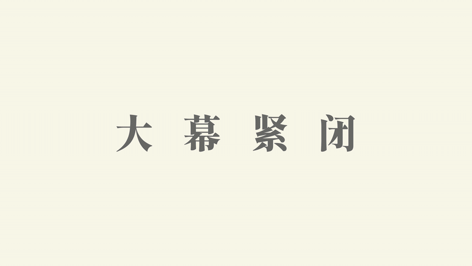
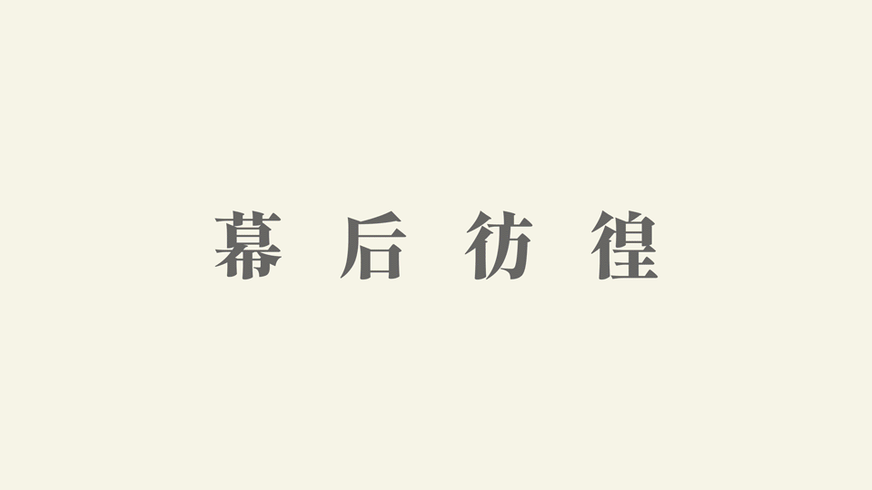
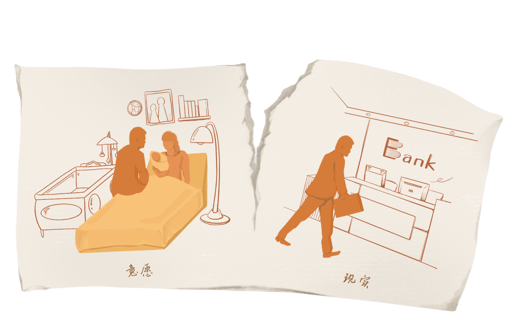
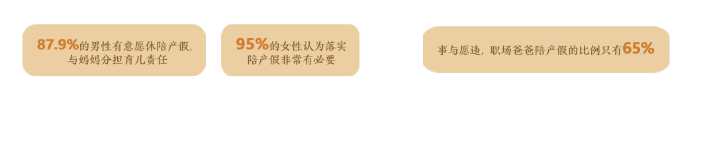
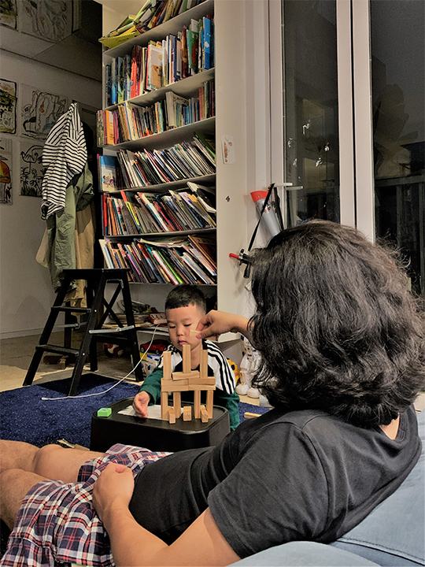
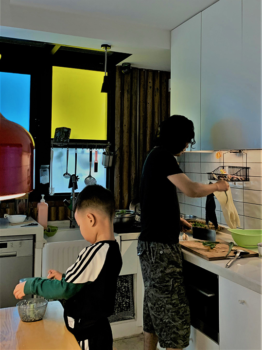
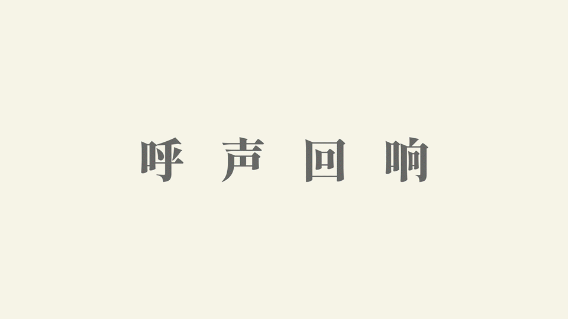
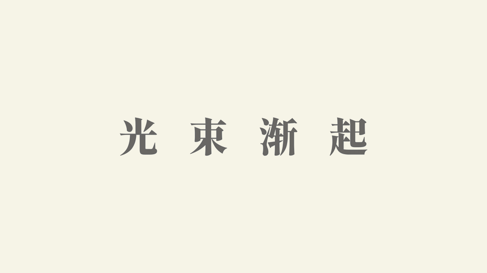

沉寂取代交锋，争吵声戛然而止。
家里顿时安静。此刻，母亲仍在外买菜。申艳萍看了看躺在床上的丈夫，一把拉开衣柜，拿下毛衣、棉袄一股脑砸向他。申燕萍让丈夫两周内搬出去租房住，说日子实在没法过下去了。
申燕萍长期在外地工作；她不在家的日子里，八十岁的母亲承担家中所有家务劳动。丈夫李建锋，则在客厅、主卧与外出聚会中度过闲暇时光。他宛若家庭里的局外人——申燕萍出钱，支付一切生活开销；母亲出力，准备三餐、照料起居。
每年除夕夜，是李建锋唯一的表示机会。母亲收下李建锋的1000元红包，第二天又从中拿出800元包给外孙女小晨。 在申燕萍眼里，如果用金钱衡量，母亲一年的家务劳动对于李建锋而言价值200元。
家里顿时安静。此刻，母亲仍在外买菜。申艳萍看了看躺在床上的丈夫，一把拉开衣柜，拿下毛衣、棉袄一股脑砸向他。申燕萍让丈夫两周内搬出去租房住，说日子实在没法过下去了。
申燕萍长期在外地工作；她不在家的日子里，八十岁的母亲承担家中所有家务劳动。丈夫李建锋，则在客厅、主卧与外出聚会中度过闲暇时光。他宛若家庭里的局外人——申燕萍出钱，支付一切生活开销；母亲出力，准备三餐、照料起居。
每年除夕夜，是李建锋唯一的表示机会。母亲收下李建锋的1000元红包，第二天又从中拿出800元包给外孙女小晨。 在申燕萍眼里，如果用金钱衡量，母亲一年的家务劳动对于李建锋而言价值200元。


家务劳动的无酬特性，将其价值隐形；而价值的不可见，也使劳动的付出退居幕后。
然而家务劳动，真的无需补偿吗？至少在今天并非如此。
2021年2月，来自北京房山的全职妈妈王女士从丈夫手中拿到5万元的补偿费。因长期承担大部分家务，王女士在离婚诉求中提出家务补偿要求；这也是首次运用《民法典》新规审结的离婚家务补偿案件。《民法典》第1088条完善了始于2001年的家务劳动经济补偿制度，进一步肯认家务劳动的价值。同年6月，浙江台州的全职妈妈齐女士在离婚时也申请了家务劳动补偿，并获得了1.5万元的赔偿款。
从2月到6月，随着家务补偿案件的增加，呈现在我们眼前的，是每一个在家庭中承担家务劳动的人——他们站在重重帷幕后，等待着点点灯光。
据《2018年全国时间利用调查公报》，在一天中, 每一个居民平均会花超过2个小时做家务，几乎占据所有无酬劳动时间。 对需要陪伴照料孩子的居民而言，每天超过3小时的育儿成为照料家庭的主要活动，在琐碎的家庭家务和育儿照料中，女性往往是主要的承担者。
然而家务劳动，真的无需补偿吗？至少在今天并非如此。
2021年2月，来自北京房山的全职妈妈王女士从丈夫手中拿到5万元的补偿费。因长期承担大部分家务，王女士在离婚诉求中提出家务补偿要求；这也是首次运用《民法典》新规审结的离婚家务补偿案件。《民法典》第1088条完善了始于2001年的家务劳动经济补偿制度，进一步肯认家务劳动的价值。同年6月，浙江台州的全职妈妈齐女士在离婚时也申请了家务劳动补偿，并获得了1.5万元的赔偿款。
从2月到6月，随着家务补偿案件的增加，呈现在我们眼前的，是每一个在家庭中承担家务劳动的人——他们站在重重帷幕后，等待着点点灯光。
据《2018年全国时间利用调查公报》，在一天中, 每一个居民平均会花超过2个小时做家务，几乎占据所有无酬劳动时间。 对需要陪伴照料孩子的居民而言，每天超过3小时的育儿成为照料家庭的主要活动，在琐碎的家庭家务和育儿照料中，女性往往是主要的承担者。
而对于选择全职的一方来说，这块帷幕被拉得更紧，起早贪黑完成家务劳动已然成为他们的常态。
两个孩子的北京妈妈刘佳，在大儿子出生半年后辞掉了工作。随着孩子从婴儿长成少年，刘佳的照料任务不轻反重。做完日常家务后，刘佳要陪孩子消化课外辅导班的内容。从6：20起床到23：00睡觉，刘佳每天留给自己读书休闲的时间只有准备午饭前的1小时。对于刘佳这样的全职妈妈而言，“手心向上的日子”让她们宁愿多花一点时间在孩子身上，而来不及关注自己。
面对“家庭”和“自我”，全职爸爸同样会束手无策。为了争取更多的自由时间，重庆的全职爸爸老谭比北京的刘佳每天早起50分钟，趁还没开始做早餐时玩几把游戏。“最折磨的是小儿子还没上学那段时间”，老谭回忆道，育儿占据了他大部分时间，做家务都只能见缝插针——利用孩子看电视的功夫打扫卫生、整理收纳，闲暇所剩无几。
两个孩子的北京妈妈刘佳，在大儿子出生半年后辞掉了工作。随着孩子从婴儿长成少年，刘佳的照料任务不轻反重。做完日常家务后，刘佳要陪孩子消化课外辅导班的内容。从6：20起床到23：00睡觉，刘佳每天留给自己读书休闲的时间只有准备午饭前的1小时。对于刘佳这样的全职妈妈而言，“手心向上的日子”让她们宁愿多花一点时间在孩子身上，而来不及关注自己。
面对“家庭”和“自我”，全职爸爸同样会束手无策。为了争取更多的自由时间，重庆的全职爸爸老谭比北京的刘佳每天早起50分钟，趁还没开始做早餐时玩几把游戏。“最折磨的是小儿子还没上学那段时间”，老谭回忆道，育儿占据了他大部分时间，做家务都只能见缝插针——利用孩子看电视的功夫打扫卫生、整理收纳，闲暇所剩无几。
刘佳、老谭，以及更多的家务劳动主要承担者，在家务——育儿——家务的交替中默默拨动着家庭前进的齿轮。孩子成长的印记不断被回忆珍藏，而家务劳动也在他们身上留下了痕迹。
申燕萍的母亲从老家进城已有二十余年。因为不习惯戴手套做家务，长期的洗衣液、洗涤剂浸泡导致母亲的手上布满裂开的口子。母亲不知道从哪里听来的偏方，说三伏天用白醋和鲜花泡手能见效，前提是不能沾洗衣液。但遇到申燕萍不在家的情况，母亲不得不戴上手套，清洗完李建锋的换洗衣裳。
申燕萍的母亲从老家进城已有二十余年。因为不习惯戴手套做家务，长期的洗衣液、洗涤剂浸泡导致母亲的手上布满裂开的口子。母亲不知道从哪里听来的偏方，说三伏天用白醋和鲜花泡手能见效，前提是不能沾洗衣液。但遇到申燕萍不在家的情况，母亲不得不戴上手套，清洗完李建锋的换洗衣裳。
申燕萍的母亲在家操持家务
长期家务劳动不仅会透支身体，也会留下心结。
自认为坚强的刘佳，却被丈夫的一句话击垮：“你就是闲在家里，你都干了什么？什么都没干。”全职后，刘佳在这方面变得敏感起来。丈夫并不是不理解自己，只是两人有冲突时，“全职”便成为丈夫唯一的攻击点。
自认为坚强的刘佳，却被丈夫的一句话击垮：“你就是闲在家里，你都干了什么？什么都没干。”全职后，刘佳在这方面变得敏感起来。丈夫并不是不理解自己，只是两人有冲突时，“全职”便成为丈夫唯一的攻击点。

如今，对于夫妻而言，一方在外工作，一方居家育儿成为更为常见的选择——相比于长辈，“新手爸妈”成为了育儿的主力。

如今，对于夫妻而言，一方在外工作，一方居家育儿成为更为常见的选择——相比于长辈，“新手爸妈”成为了育儿的主力。
家庭以外，“新手爸妈”往往面临着更大的压力——职场并没有因为家务劳动的分担而开辟出体恤与共情的空间；相反，生存晋升空间变得更加逼仄，返回职场成为需要勇气的试探。北京一公司HR坦言，公司很少招35岁以上的人。和未婚员工相比，已婚员工因孩子生病不得不多请假——家务劳动增加了职场风险。
对于爸爸们而言，参与育儿成为了普遍的期待，但职场的支持不足，陪产假似乎成为一种奢望。
2017年，视频平台一男员工表示自己在休陪产假时无故被公司辞退。
2019年，另一位知乎答主也表示自己曾因休半个月的陪产假而被扣50%的绩效。
老谭深谙职场逻辑，放弃了再次求职。大儿子刚上幼儿园时，每个月都生病，等待这些或大或小的病症痊愈至少需要一周的时间，“没有工作能让你一个月休息一个星期，无法兼顾”。小儿子出生后，老谭本就紧凑的时间变得更加捉襟见肘。
这，并非个例——根据领英和《母婴行业蓝皮书》，87.9%的男性有意愿休陪产假，与妈妈分担育儿责任，而95%的女性认为落实陪产假非常有必要；但事与愿违，职场爸爸陪产假的比例为65%，远低于有意愿休陪产假的男性比例。
对于爸爸们而言，参与育儿成为了普遍的期待，但职场的支持不足，陪产假似乎成为一种奢望。
2017年，视频平台一男员工表示自己在休陪产假时无故被公司辞退。
2019年，另一位知乎答主也表示自己曾因休半个月的陪产假而被扣50%的绩效。
老谭深谙职场逻辑，放弃了再次求职。大儿子刚上幼儿园时，每个月都生病，等待这些或大或小的病症痊愈至少需要一周的时间，“没有工作能让你一个月休息一个星期，无法兼顾”。小儿子出生后，老谭本就紧凑的时间变得更加捉襟见肘。
这，并非个例——根据领英和《母婴行业蓝皮书》，87.9%的男性有意愿休陪产假，与妈妈分担育儿责任，而95%的女性认为落实陪产假非常有必要；但事与愿违，职场爸爸陪产假的比例为65%，远低于有意愿休陪产假的男性比例。


而对于承担生育的妈妈而言，在职场生存更为艰难。
有了孩子后，家务劳动中的重要一环便是照顾孩子的日常起居，所耗时间随之增加。根据2014年对4438名女性的调查 ，成为母亲后，女性平均每日需多花1.65小时在家务劳动中，每月工作小时则减少7.68小时。另一研究显示，城镇体制内女职工在生育后，小时工资、月工资水平均下降8.1%；生育二孩后，下降幅度超过22%——工资浮动直观展现了时间分配变化的结果。
有了孩子后，家务劳动中的重要一环便是照顾孩子的日常起居，所耗时间随之增加。根据2014年对4438名女性的调查 ，成为母亲后，女性平均每日需多花1.65小时在家务劳动中，每月工作小时则减少7.68小时。另一研究显示，城镇体制内女职工在生育后，小时工资、月工资水平均下降8.1%；生育二孩后，下降幅度超过22%——工资浮动直观展现了时间分配变化的结果。
在成为全职妈妈九年后，刘佳想要重回职场，但年岁增长的步调追不上就业市场的迭代频次。大环境愈发向年轻人敞开怀抱，原先岗位的变化自己尚未适应。在纠结与彷徨中，刘佳迷途而返。
然而，社会的视线向来聚焦“台前”，难以再分出精力关照“幕后”的角色 ；殊不知，一方的心无旁骛需要以家庭中另一方全权承担家务劳动为保障。
老谭这样形容自己：“后院不稳，前方打不好仗”，多年打拼后，妻子的设计工作室已经小有规模，“我俩是一条船上的人”。与老谭一家相似，对于刘佳而言，与丈夫之间的真正理解，才能让他们共同成长、共同维系家庭。
然而，社会的视线向来聚焦“台前”，难以再分出精力关照“幕后”的角色 ；殊不知，一方的心无旁骛需要以家庭中另一方全权承担家务劳动为保障。
老谭这样形容自己：“后院不稳，前方打不好仗”，多年打拼后，妻子的设计工作室已经小有规模，“我俩是一条船上的人”。与老谭一家相似，对于刘佳而言，与丈夫之间的真正理解，才能让他们共同成长、共同维系家庭。


全职爸爸老谭照顾儿子的日常生活
但在社会支持大规模进入家庭的年代，保障更多来源于家庭外部。 中国传媒大学马克思主义学院讲师葛耘娜介绍，在上世纪五六十年代的社会抚育模式下，孩子满月后便可送到工厂的托儿所，单位为员工兼顾事业与育儿提供了必要的支持。
然而，现状下，雇佣实则是“雇佣一双手的关系” ——企业看重的是员工的劳动过程能够创造多少利润，不再分出精力关注支撑这双手的家庭，也难以为员工的家务劳动提供空间。
然而，现状下，雇佣实则是“雇佣一双手的关系” ——企业看重的是员工的劳动过程能够创造多少利润，不再分出精力关注支撑这双手的家庭，也难以为员工的家务劳动提供空间。


在申燕萍女儿小晨的升学宴上，亲友们给申燕萍的母亲斟上酒，告诉小晨最先要敬的是姥姥。
从“房山第一案”的5万到《民法典》出台后的最高补偿金额12万， 用金钱衡量“大功臣”的家庭贡献时，司法判决却整体维持在一个偏保守区间内。
但，在社交媒体相关话题的评论区中，出现了不少对这一结果持有异议的声音：“给钱是应该的，但给5万也忒少了”，“才5万，比请保姆还便宜”，“建议至少以育儿嫂工资为基数补偿”。
从“房山第一案”的5万到《民法典》出台后的最高补偿金额12万， 用金钱衡量“大功臣”的家庭贡献时，司法判决却整体维持在一个偏保守区间内。
但，在社交媒体相关话题的评论区中，出现了不少对这一结果持有异议的声音：“给钱是应该的，但给5万也忒少了”，“才5万，比请保姆还便宜”，“建议至少以育儿嫂工资为基数补偿”。
2021年1月1日，北京房山法院适用民法典新规首次审结了一起离婚家务补偿案件。
案件中，全职太太王女士在离婚诉讼中称，因承担大部分家务，故提出要求家务补偿。最终，法院判决双方离婚，全职太太王女士获得家务补偿款50000元，引起网络热议。
我们统计了新浪微博平台上从案件发生当日到5月10日的共6303条评论，分析了词频数最高的40个关键词。 点击左侧图中及下方关键词，可以看到相关网友评论。
案件中，全职太太王女士在离婚诉讼中称，因承担大部分家务，故提出要求家务补偿。最终，法院判决双方离婚，全职太太王女士获得家务补偿款50000元，引起网络热议。
我们统计了新浪微博平台上从案件发生当日到5月10日的共6303条评论，分析了词频数最高的40个关键词。 点击左侧图中及下方关键词，可以看到相关网友评论。
五万：出现了2118次
“给钱是应该的，但给5万也忒少了。”
“5万太讽刺了，去工作吧，所有女孩们。”
“这几年和工作的脱节能是5万弥补的？”
“不要物化女性，这5万是全职太太放弃工作照顾家庭作出的牺牲。”
“平分共同财产后，另外补偿5万块，为什么跟家政比？”
“给钱是应该的，但给5万也忒少了。”
“5万太讽刺了，去工作吧，所有女孩们。”
“这几年和工作的脱节能是5万弥补的？”
“不要物化女性，这5万是全职太太放弃工作照顾家庭作出的牺牲。”
“平分共同财产后，另外补偿5万块，为什么跟家政比？”
保姆：出现了1233次
“这能和保姆薪水比较吗？夫妻二人的婚姻成雇佣关系了？”
“全职太太大部分比月嫂学历高，既然不谈感情，那么工资太低了吧。”
“才5万，比请保姆还便宜。”
“女方把自己当保姆？那男方呢，赚钱养家包吃包住，算啥”
“我感觉按请保姆的一半的工资算，家是大家一起的劳务费平摊。”
“这能和保姆薪水比较吗？夫妻二人的婚姻成雇佣关系了？”
“全职太太大部分比月嫂学历高，既然不谈感情，那么工资太低了吧。”
“才5万，比请保姆还便宜。”
“女方把自己当保姆？那男方呢，赚钱养家包吃包住，算啥”
“我感觉按请保姆的一半的工资算，家是大家一起的劳务费平摊。”
家务家庭：出现了1227次
“男的在外也是为家庭劳动。”
“在一个家庭中分工明确，负责不同的方面，共同经营家庭这种模式并没有什么不对。”
“白天上班晚上全职的女人在离婚时同样或者更应该获赔。”
“凭什么？丈夫天天早出晚归工作累死累活赚钱养家，你在家待着做点家务活而已。”
“老公跟我在家带了三个月娃，深悟家务育儿的艰辛劳累，说这比上班累多了。”
“男的在外也是为家庭劳动。”
“在一个家庭中分工明确，负责不同的方面，共同经营家庭这种模式并没有什么不对。”
“白天上班晚上全职的女人在离婚时同样或者更应该获赔。”
“凭什么？丈夫天天早出晚归工作累死累活赚钱养家，你在家待着做点家务活而已。”
“老公跟我在家带了三个月娃，深悟家务育儿的艰辛劳累，说这比上班累多了。”
全职太太：出现了1203次
“这是很好的开始，以后全职太太离婚都可以有“家务劳动补偿”的依据了。”
“以后谁还敢做全职太太，生育率又要降了”
“全职太太也分穷人家的和富人家的，穷人家的么，生一个就算了吧…”
“如果不当全职太太在社会上有一份稳定工作的话，离婚也平分财产呢”
“请全职太太不要碰瓷家政工作者！”
“这是很好的开始，以后全职太太离婚都可以有“家务劳动补偿”的依据了。”
“以后谁还敢做全职太太，生育率又要降了”
“全职太太也分穷人家的和富人家的，穷人家的么，生一个就算了吧…”
“如果不当全职太太在社会上有一份稳定工作的话，离婚也平分财产呢”
“请全职太太不要碰瓷家政工作者！”
女性：出现了1197次
“女孩子要独立，男孩子理解包容吧。这个赔偿金再多，也不够等同于女孩的付出吧。”
“这就提醒了如果家境不好的女性，去做清洁工一年也有5万 比把时间花在家里有用。”
“家务活难道不应该男女一起承担？”
“个人认为不要拔高全职太太，因为绝大部分家庭女方工作家里也没保姆，该干的活都一样干。”
“这个案子说明一个问题，不要做全职太太，每一个女性都应该独立生活，保持风采。”
“女孩子要独立，男孩子理解包容吧。这个赔偿金再多，也不够等同于女孩的付出吧。”
“这就提醒了如果家境不好的女性，去做清洁工一年也有5万 比把时间花在家里有用。”
“家务活难道不应该男女一起承担？”
“个人认为不要拔高全职太太，因为绝大部分家庭女方工作家里也没保姆，该干的活都一样干。”
“这个案子说明一个问题，不要做全职太太，每一个女性都应该独立生活，保持风采。”
婚姻：出现了742次
“争论的男男女女真有意思，都感觉吃亏，都不结婚好了。”
“什么都可以用钱衡量？所以结婚真的成了做交易了吗？”
“男女对立也太严重了吧，两个人结婚离婚，只要双方达成一致，别人也不用管那么多吧。”
“婚姻本来就是要双方共同努力，共同付出的。”
“争论的男男女女真有意思，都感觉吃亏，都不结婚好了。”
“什么都可以用钱衡量？所以结婚真的成了做交易了吗？”
“男女对立也太严重了吧，两个人结婚离婚，只要双方达成一致，别人也不用管那么多吧。”
“婚姻本来就是要双方共同努力，共同付出的。”
补偿：出现了643次
“应该以家庭收入乘以结婚年数然后百分比计算。”
“白天上班晚上回家做家务的人也辛苦，这种白天上班晚上全职的女人在离婚时同样或者更应该获赔”
“建议至少按（代孕+育儿嫂）为基数补偿”
“按保姆工资和完全婚前工资补贴的也很过分，结婚又不是打工，儿女也是自己的。”
“应该以家庭收入乘以结婚年数然后百分比计算。”
“白天上班晚上回家做家务的人也辛苦，这种白天上班晚上全职的女人在离婚时同样或者更应该获赔”
“建议至少按（代孕+育儿嫂）为基数补偿”
“按保姆工资和完全婚前工资补贴的也很过分，结婚又不是打工，儿女也是自己的。”
“我们国家家务补偿之所以高不了，你要了解它的历史沿革。”
许秋莉，京师律师事务所律师，分析了“房山第一案”判决结果后的考量因素。
司法实践中，立法者需要衡量补偿金额是否在大多数公民的承担能力之内。 民众对“参考家政工资标准”的呼声并不贴合实际：如果一名北京居民需要按家政工资标准支付家务劳动补偿，按照2020年北京市67745元的人均可支配收入，扣除近2万元的补偿款后，他的每月开销需要控制在4000元以内；而在人均收入有所下降的省份，当负担了补偿款后，居民的每月最大开销将不足2000元。在经济富足尚未走进千家万户的当下，判定较高金额会使得当事人难以支付，而这将最终导致法律效果的削弱——所以，当浙江台州的全职妈妈齐女士要求按每月5000元的标准赔偿共19万元时，法院的最终判定金额为1.5万元。
许秋莉，京师律师事务所律师，分析了“房山第一案”判决结果后的考量因素。
司法实践中，立法者需要衡量补偿金额是否在大多数公民的承担能力之内。 民众对“参考家政工资标准”的呼声并不贴合实际：如果一名北京居民需要按家政工资标准支付家务劳动补偿，按照2020年北京市67745元的人均可支配收入，扣除近2万元的补偿款后，他的每月开销需要控制在4000元以内；而在人均收入有所下降的省份，当负担了补偿款后，居民的每月最大开销将不足2000元。在经济富足尚未走进千家万户的当下，判定较高金额会使得当事人难以支付，而这将最终导致法律效果的削弱——所以，当浙江台州的全职妈妈齐女士要求按每月5000元的标准赔偿共19万元时，法院的最终判定金额为1.5万元。
*拖动地图查看全貌
结合种种考量，在《民法典》出台后的实施摸索阶段，一个较低的补偿金额是更为稳妥的。 法律庄严性的背后是长期的司法实践：许律师相信，等三五年后，随着相关数据与案例的累积，一线法官的实务经验将更加丰富、高校科研工作者的参与意愿也会增强，会有更进一步的司法解释。大踏步前进不符合法律修改完善的规律，“向前迈了一个小步子”更为稳妥。
“小步子”的含义不仅局限于立法层面。女性主义研究学者孙百卉认为，补偿金额同样具有启示意义：面对因全职在家而错失的职业发展机会、婚姻另一方未公开的灰色收入等问题，法律无法也无需实现全覆盖；此时，较低的补偿金额不仅起到 “象征性安慰”的作用，同时也敲响了警钟：由于法律判决结果很难提供实质性补偿， “《民法典》更是一个号召，提醒面对‘工作还是回家’困境的人们审慎抉择。”
如果能重新选择，刘佳会选择工作而非再生二胎。起初，家人给刘佳的承诺是老大上了幼儿园就可以出去工作。老二出生后，家务与育儿令刘佳难以脱身。
随着教育成本的提高、社会支持的缺乏，育儿在一定程度上已经成为不言自明的负担。5月31日，国家生育政策再次优化，放开三孩政策；而政策落地首先要处理的棘手问题是一孩生育意愿的降低。
第七次全国人口普查结果显示，育龄妇女总和生育率为1.3，低于1.5的国际警戒线。生育政策的调整能否扭转低生育时代渐行渐近的局面，仍是未知数。
“小步子”的含义不仅局限于立法层面。女性主义研究学者孙百卉认为，补偿金额同样具有启示意义：面对因全职在家而错失的职业发展机会、婚姻另一方未公开的灰色收入等问题，法律无法也无需实现全覆盖；此时，较低的补偿金额不仅起到 “象征性安慰”的作用，同时也敲响了警钟：由于法律判决结果很难提供实质性补偿， “《民法典》更是一个号召，提醒面对‘工作还是回家’困境的人们审慎抉择。”
如果能重新选择，刘佳会选择工作而非再生二胎。起初，家人给刘佳的承诺是老大上了幼儿园就可以出去工作。老二出生后，家务与育儿令刘佳难以脱身。
随着教育成本的提高、社会支持的缺乏，育儿在一定程度上已经成为不言自明的负担。5月31日，国家生育政策再次优化，放开三孩政策；而政策落地首先要处理的棘手问题是一孩生育意愿的降低。
第七次全国人口普查结果显示，育龄妇女总和生育率为1.3，低于1.5的国际警戒线。生育政策的调整能否扭转低生育时代渐行渐近的局面，仍是未知数。
而一项2019年的研究发现 ，当家务劳动的重担被有效缓解后，家庭生育动机将显著提高。除了夫妻双方的互相理解与体谅，社会力量同样肩负着重要责任。
对于企业而言，如何回应对男性陪产假落实的呼吁，如何加强对女性就业的支持？对于国家而言，如何推进普惠托育服务体系的建立，如何降低维系家庭的压力？ 看似发生在家庭内部空间的家务劳动，实则牵系着社会保障体系、国家教育系统、各企业公司等多主体的联合行动，与人口红利、经济发展等宏大议题息息相关。
对于企业而言，如何回应对男性陪产假落实的呼吁，如何加强对女性就业的支持？对于国家而言，如何推进普惠托育服务体系的建立，如何降低维系家庭的压力？ 看似发生在家庭内部空间的家务劳动，实则牵系着社会保障体系、国家教育系统、各企业公司等多主体的联合行动，与人口红利、经济发展等宏大议题息息相关。



家务与自我，育儿和职场，并非天然矛盾。当一个个小家聚集成社会、凝结成国家时，家庭便不再止于私领域，而成为公共的关切——而这一关切也将成为支撑家庭的重要力量。
在育儿成为国家期待的当下，如果学校承担了更多的教育责任，在“家—学校—单位”中辗转周旋的父母们便能更加从容应对工作与育儿。 这一变化背后，是一整套环环相扣的社会保障体系。 国家和企业共同行动，提高教职人员工作福利、提供孩子们的接送、意外保险等各项服务。
尝试与改变不曾止步： 7月2日，北京市教育委员会发布关于启动暑期托管服务的通知，要求托管服务承办学校做好学生安全工作，认真落实疫情防控各项要求，这一背后是一个权责明确的风险控制机制。“学生的共同成长，离不开学校家庭社会的共同关心和支持”，通知里的文字，是对社会呼唤的回应。爸爸妈妈们无需再为“暑假何处去”而忧心，把孩子接到家后便是晚餐、休闲，享受每日的亲子团聚时间。
事实上，由政府、企业、家庭共同搭建的社会保障体系，在世界范围内已有所实践。 日本由过去的“家庭支付社会保障”转换至“社会保障支付家庭”，“国民皆保险·国民皆年金”，由社会承担护理照顾家庭老幼的责任。在欧洲社会模式中，全社会共担风险、共享机会，全职照料家庭的成员同样由国家支持并提供保障。而在中国，政府、社会组织、企业等社会力量逐渐为老年人提供的各种生活所需的服务， 社会参与家庭成为趋势，家庭不再只是一个家内部的私事，成为了社会的共同责任。
即使是司法层面，北京大学法学院教授强世功也认为， 爱的难题不能依靠以理性计算为代表的法律。 更理想的解决方案是把婚姻家庭纠纷从目前的民事一庭中分离出来，设立独立的“家事法庭”，或在目前法院体系之下设立专门的“民事四庭”，避免将家庭等同于基于契约搭建平台，而是将其视为抚慰人心的温床。
当光束渐起，家务劳动从幕后走向社会台前，经营家庭的压力将被逐步纾解。家庭的维系渐渐远离精密的计算，取之以爱的归位。
申燕萍所向往的，是侄子丁进和侄媳的家务劳动分工模式。丁进和妻子都是体制内职工，二人有所侧重地分担家务。丁进更多承担拖地、吸尘等重活，妻子则负责折叠衣服、整理收纳。
在育儿成为国家期待的当下，如果学校承担了更多的教育责任，在“家—学校—单位”中辗转周旋的父母们便能更加从容应对工作与育儿。 这一变化背后，是一整套环环相扣的社会保障体系。 国家和企业共同行动，提高教职人员工作福利、提供孩子们的接送、意外保险等各项服务。
尝试与改变不曾止步： 7月2日，北京市教育委员会发布关于启动暑期托管服务的通知，要求托管服务承办学校做好学生安全工作，认真落实疫情防控各项要求，这一背后是一个权责明确的风险控制机制。“学生的共同成长，离不开学校家庭社会的共同关心和支持”，通知里的文字，是对社会呼唤的回应。爸爸妈妈们无需再为“暑假何处去”而忧心，把孩子接到家后便是晚餐、休闲，享受每日的亲子团聚时间。
事实上，由政府、企业、家庭共同搭建的社会保障体系，在世界范围内已有所实践。 日本由过去的“家庭支付社会保障”转换至“社会保障支付家庭”，“国民皆保险·国民皆年金”，由社会承担护理照顾家庭老幼的责任。在欧洲社会模式中，全社会共担风险、共享机会，全职照料家庭的成员同样由国家支持并提供保障。而在中国，政府、社会组织、企业等社会力量逐渐为老年人提供的各种生活所需的服务， 社会参与家庭成为趋势，家庭不再只是一个家内部的私事，成为了社会的共同责任。
即使是司法层面，北京大学法学院教授强世功也认为， 爱的难题不能依靠以理性计算为代表的法律。 更理想的解决方案是把婚姻家庭纠纷从目前的民事一庭中分离出来，设立独立的“家事法庭”，或在目前法院体系之下设立专门的“民事四庭”，避免将家庭等同于基于契约搭建平台，而是将其视为抚慰人心的温床。
当光束渐起，家务劳动从幕后走向社会台前，经营家庭的压力将被逐步纾解。家庭的维系渐渐远离精密的计算，取之以爱的归位。
申燕萍所向往的，是侄子丁进和侄媳的家务劳动分工模式。丁进和妻子都是体制内职工，二人有所侧重地分担家务。丁进更多承担拖地、吸尘等重活，妻子则负责折叠衣服、整理收纳。
丁进夫妇一同做家务
周末，小两口邀请申燕萍来家做客，妻子炖菜时，丁进也没闲着，给厨房的碗柜清洁、消毒。糖醋排骨出锅后，丁进系上围裙，“大厨要一展身手了”，不一会儿端出一菜一汤。申燕萍笑道，两个人早把“竞争关系”抛之脑后，互相夸赞对方的手艺。
“到了年轻一代，观念就和我们不一样了。”申燕萍对未来抱有乐观态度。
“到了年轻一代，观念就和我们不一样了。”申燕萍对未来抱有乐观态度。